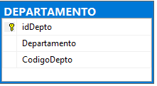

Lenguaje e interfaz de una BD, Lenguaje formal de consultas SQL y Comandos SQL
4. Lenguaje Formal de Consultas: Comando INSERT
Contenido
Es el comando utilizado para añadir registros en una tabla o en una vista. En su forma más simple añade un registro a una tabla, pero pueden añadirse más de un registro si se proporcionan datos necesarios para varios registros o se anida la salida de una consulta de una tabla como entrada del comando INSERT para añadir varios registros a la vez.
Al momento de realizar la inserción del nuevo registro, la base de datos verifica si los datos cumplen con todas las restricciones de la base de datos y su cumple con la integridad referencial impuesta en la estructura de la base de datos.
Su sintaxis, más simplificada, es la siguiente:
INSERT INTO NombreTabla(campo1,campo2,…campoN) values (Valor1,Valor2,…ValorN)Donde:
- Campo: Son los nombres de los campos que se van a insertar.
- Valor: Los valores que se van a insertar.
“Los valores que se van a insertar deben estar en el mismo orden y ser del mismo tipo de la tabla.”
Ejemplo: Si contamos con la siguiente tabla

insert into DEPARTAMENTO(idDepto,Departamento,CodigoDepto) values (1,'AHUACHAPAN','DEPTO-01')Inserción añadida:
insert into DEPARTAMENTO(idDepto,Departamento,CodigoDepto)
values (2,'SANTA ANA','DEPTO-02'),
(3,'CHALATENANGO','DEPTO-03'),
(4,'MORAZAN','DEPTO-04')De esta manera se abrevia la inserción de varios registros en una misma ejecución.
Consideraciones al insertar una fila:
Punto 1
Si se ha creado una clave primaria en una tabla y se trata de INSERTAR una fila de datos con un valor que ya se encuentra registrado, el motor de base de datos le arrojará un error.
Punto 2
Si necesita insertar varios registros de otra tabla con alguna condición se debe combinar con la SENTENCIA SELECT.
Punto 3
Si existe un campo AUTONUMÉRICO creado en la tabla que deseamos INSERTAR, ese campo no deberá ser especificado en la sentencia INSERT porque nos arrojará un mensaje de error.
Obra publicada con Licencia Creative Commons Reconocimiento Compartir igual 4.0